Profil Desa
Desa Bawang
Desa Bawang merupakan salah satu dari 18 desa/kelurahan yang berada di Kecamatan Bawang, Kabupaten Banjarnegara, Provinsi Jawa Tengah. Desa ini juga menjadi pusat pemerintahan Kecamatan Bawang.
Lokasi Administrasi & Kontak Kantor
Jalan KH. Busro RT 05 RW 05, Desa Bawang, Kecamatan Bawang.
Kode Pos : 53471
Situs Resmi : Website Resmi Desa Bawang
Desa Bawang berada di area strategis dan dikelilingi beberapa desa seperti Bandingan, Binorong, Blambangan, Depok, Gemuruh, dan Mantrianom.

Sejarah Desa
Sejarah telah mencatat bahwa Pulau Lombok pernah menjadi wilayah kekuasaan Kerajaan Karang Asem Bali yang berkedudukan di Cakranegara dengan seorang raja bernama Anak Agung Gde Jelantik. Berakhirnya kekuasaan Kerajaan Karang Asem Bali di Pulau Lombok setelah datangnya Belanda pada Tahun 1891, dimana Belanda pada waktu itu ingin menguasai Pulau Lombok dengan dalih pura-pura membantu rakyat Lombok yang dianggap tertindas oleh Pemerintahan Raja Lombok yaitu Anak Agung Gede Jelantik. Pada masa kekuasaan Raja Lombok yaitu Anak Agung Gde Jelantik, wilayah Desa Senggigi ( Dusun Mangsit, Kerandangan, Senggigi dan Dusun Loco) masih bergabung dengan Desa Senteluk yang sekarang menjadi Desa Meninting . Sedangkan pada tahun 1962 Desa Senteluk pecah menjadi 2 (Dua) desa yaitu Desa Meninting dan Desa Batulayar dan Dusun Mangsit,Kerandangan,Senggigi dan Dusun Loco bergabung ke Desa Batulayar. Pemberian nama Desa Batulayar pada waktu itu yang lazim disebut dengan Pemusungan/Kepala Dea Batulayar berdasarkan hasil musyawarah nama Batulayar diambil dari nama tempat yang amat terkenal yaitu Makam Batulayar yang sampai saat ini banyak dikunjungi oleh masyarakat Pulau Lombok pada khususnya dan Masyarakat Nusa Tenggara Barat pada umumnya. Pada tahun 2001 Desa Batulayar dimekarkan menjadi 2 (dua) yaitu Desa Batulayar (sebagai Desa Induk) dan Desa Senggigi (sebagai Desa Persiapan) dengan SK.Bupati No : 30 Tahun 2001 tanggal 17 Mei 2001, yang pada waktu itu yang menjadi pejabat Kepala Desa Senggigi ialah H. ARIF RAHMAN, S.IP., dengan jumlah dusun sebanyak 3 dusun, yaitu :
1. Dusun Senggigi
2. Dusun Kerandangan
3. Dusun Mangsit
Selanjutnya pada tanggal 30 Juli 2003 Pejabat Kepala Desa Senggigi dari H. ARIF RAHMAN, S.IP diganti oleh audara ARIFIN dengan SK. Bupati Lombok Barat No : 409/66/pem/2003. Berhubung Desa Senggigi masih bersifat Desa Persiapan, maka berdasarkan hasil musyawarah desa, tertanggal 15 Desember 2003 , maka pada tanggal 22 Desember 2003 Desa Senggigi mengadakan Pemilihan Kepala Desa devinitif yang pertama kali dipimpin oleh HAJI JUNAIDI terpilih dengan SK. Bupati Lombok Barat No :01/01/Pem/2004 tertanggal 2 Januari 2004 sampai pada tahun 2008. Selanjutnya pada tahun 2008, Desa Senggigi mengadakan pemilihan Kepala Desa Senggigi yang kedua dan dimenangkan oleh Bapak H. MUTAKIR AHMAD dengan SK. Bupati Lombok Barat No :1320/48/Pem./2008 tertanggal 23 Desember 2008, Periode 2008-2014. Kemudian Kepala desa terpilih Periode 2015 s/d 2021 adalah MUHAMMAD ILHAM dengan SK. Bupati Lombok Barat No : 160/04/BPMPD/15 tanggal 27 Januari 2015 kini baru menjabat 2 (dua) bulan.Visi & Misi
Visi
Terwujudnya Desa Bawang yang mandiri, Beriman, mampu dalam pengelolaan potensi Desa dan Pemabangunan berkelanjutan untuk mewujudkan masyarakat yang sejahtera, berkualitas, berbudaya, maju, adil, demokrasi dan peduli terhadap lingkungan dengan landasan Pancasila dan UUd 1945
Misi
- Mewujudkan tata kelola pemerintahan yang baik
- Meningkatkan kualitas SDM masyarakat
- Meningkatkan partisipasi bagi semua lapisan masyarakat dalam pembangunan
- Mengembangkan Teknologi Informasi Pembangunan Infrastruktur , sarana dan prasarana Desa
- Mengembangkan seluruh potensi desa
- Melestarikan kearifan lokal
- Meningkatkan kualitas lingkungan pemukiman
- Meningkatkan kualitas dan membangun kesadaran kesehatan masyarakat
- Membangun kerjasama dan kemitraan strategis
- Mengembangkan kegiatan keagamaan
- Pengelolaan Tambahan Tunjangan
Statistik Penduduk
Galeri Desa
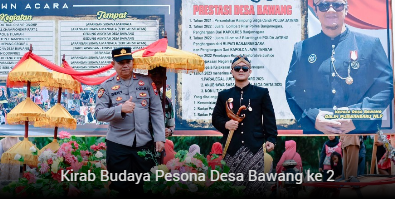
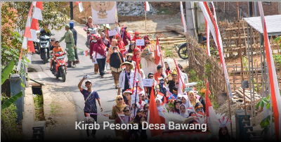
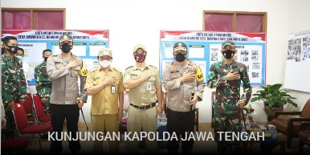
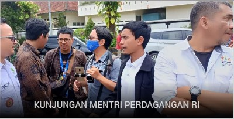
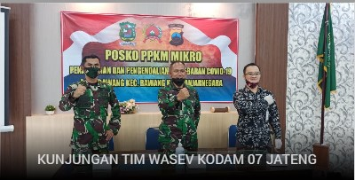
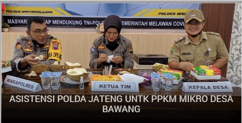
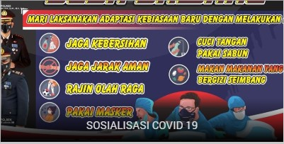
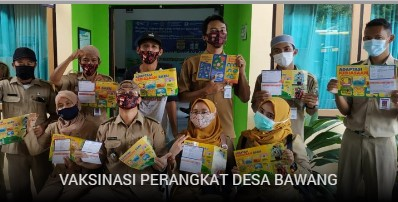
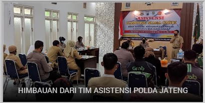
Struktur Organisasi

Kepala Desa
Galih Purwandaru
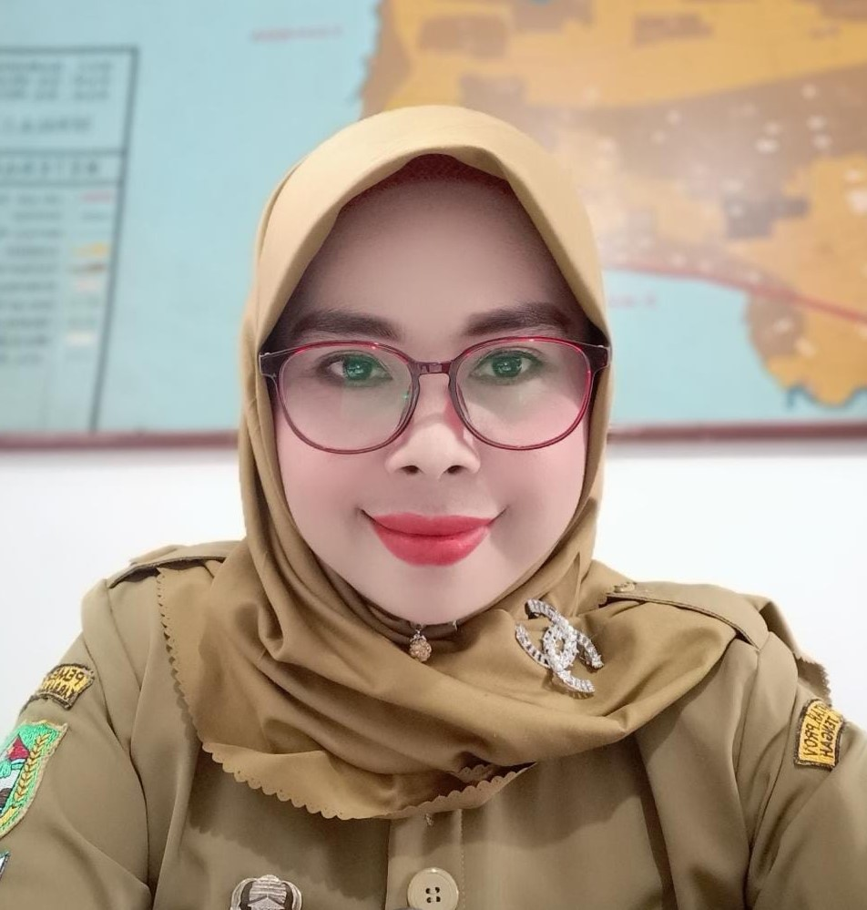
Sekretaris Desa
Nurkhyati
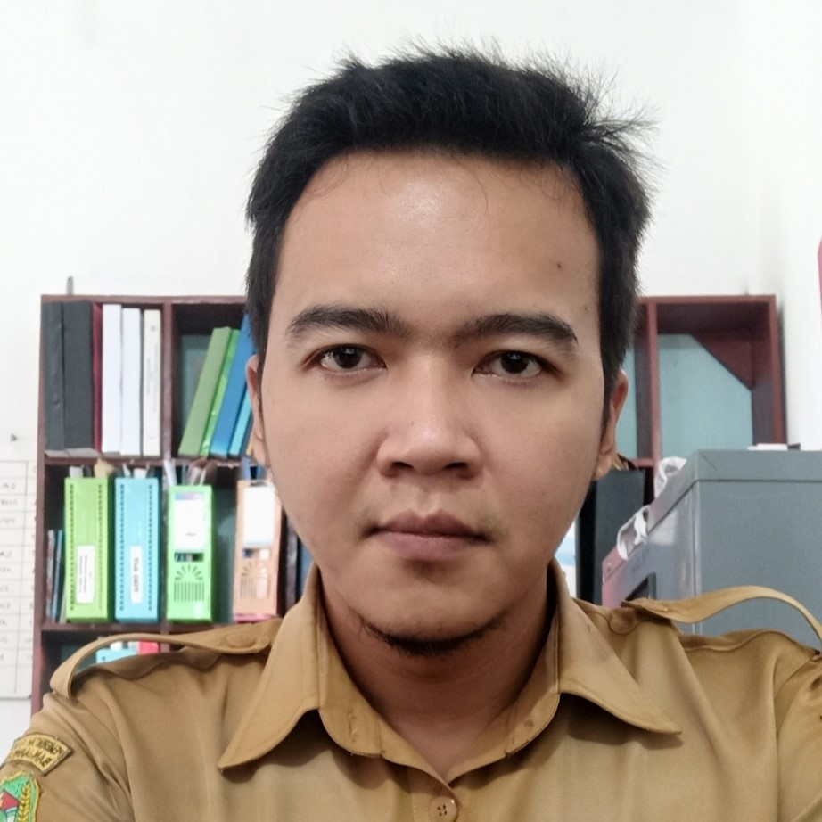
Kaur Keuangan
Agin Selfian D. S.T
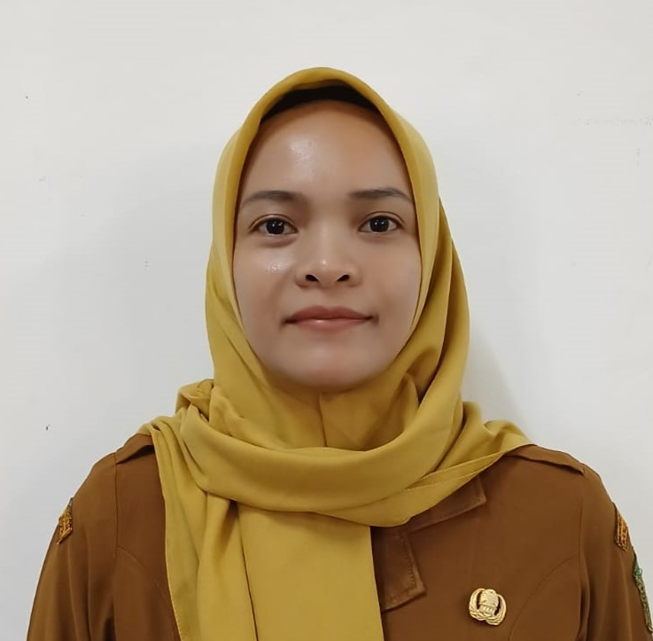
Kaur Perencanaan
Shinta Fatwa Utami
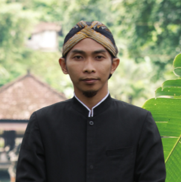
Kaur Tata Usaha & Umum
Sya'bani Agung P. S.T
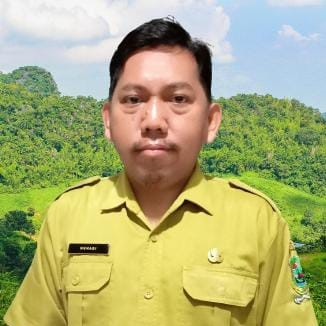
Kasie Kesejahteraan Rakyat
Nuhadi
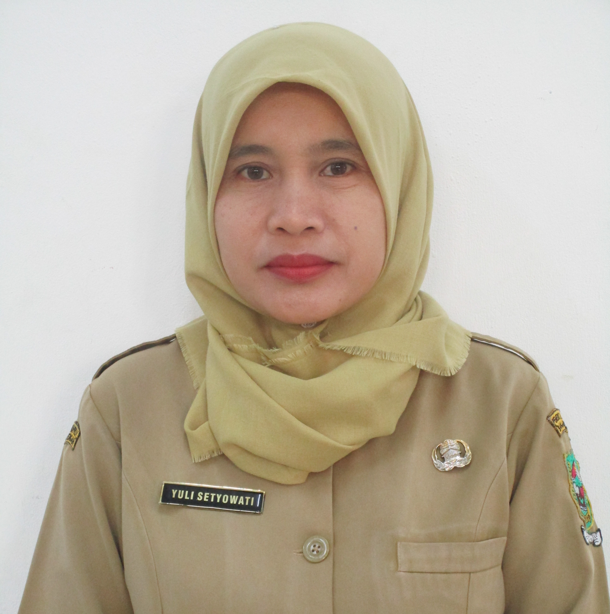
Kasie Pemerintahan
Yuli Setyowati A.Md
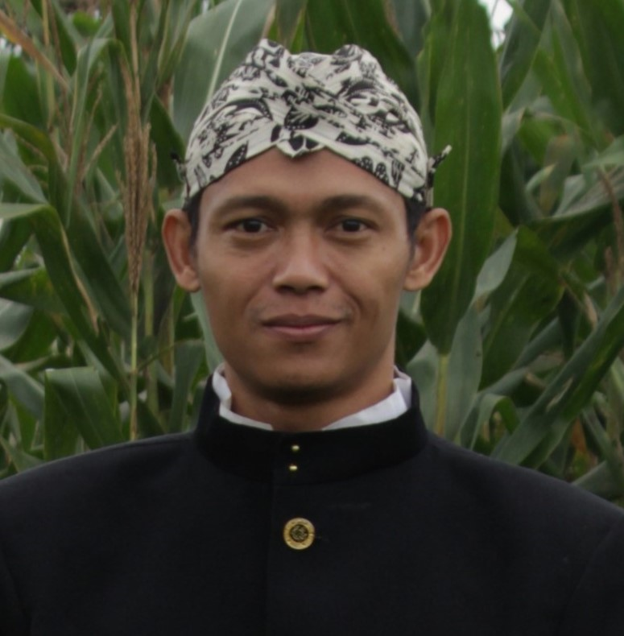
Kasie Pelayanan
Saefulloh Rohmanudin A.Md
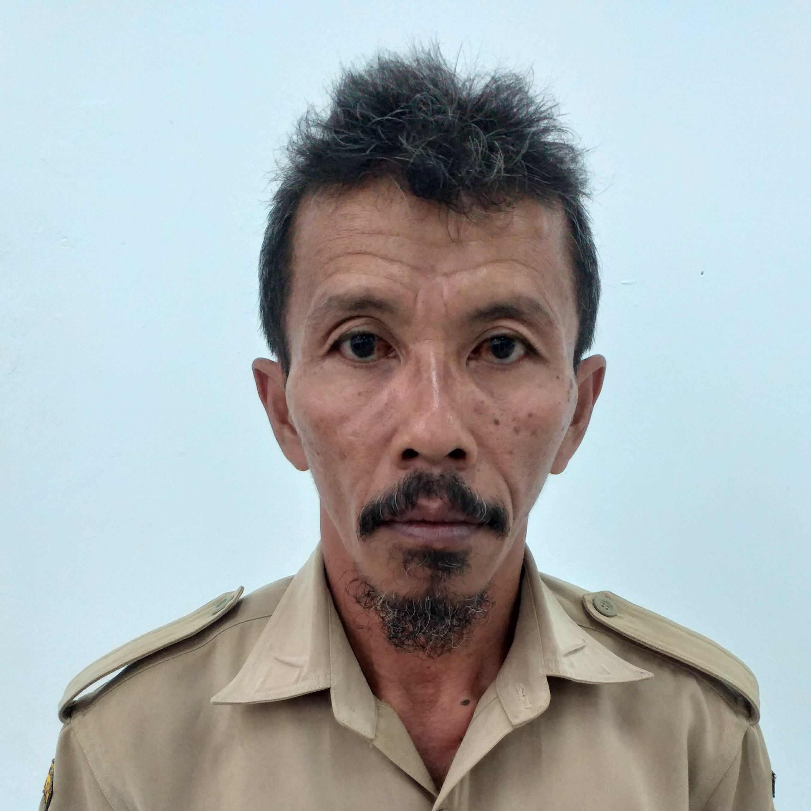
Kepala Dusun I Tegalrejo
Afif Nurdin
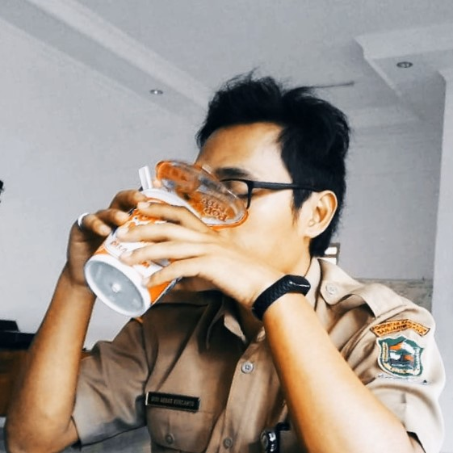
Kepala Dusun II Mrica
Didi Akbar K. A.Md
Kepala Dusun III Danakerta
Satria Rimba Perkasa
Informasi UMKM
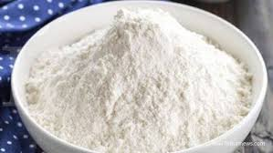
Tepung Mocaf
Olahan singkong fermentasi ini menjadi produk unggulan desa. Diproduksi massal oleh warga setempat, tepung ini bahkan telah diekspor dan dipamerkan di ajang internasional seperti Malaysia International Halal Showcase (Mihas).
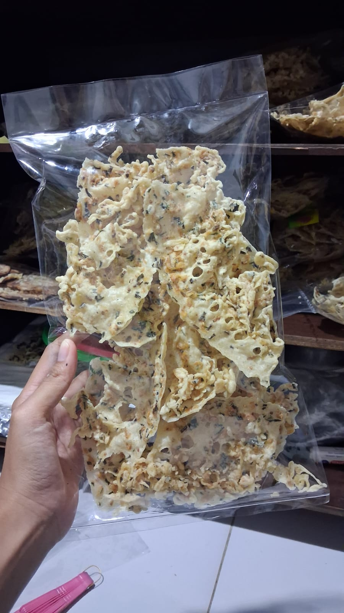
Peyek
usaha makanan ringan yang memproduksi peyek renyah dengan cita rasa gurih khas Indonesia. Dibuat dari bahan sederhana seperti tepung beras dan kacang/kedelai/ebi/cabai/dll, produk ini cocok sebagai camilan sehari-hari dan memiliki potensi pasar yang luas karena disukai berbagai kalangan.
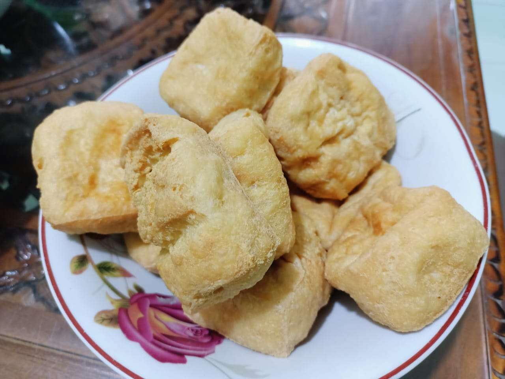
Tahu
Usaha yang bergerak di bidang produksi makanan berbahan dasar kedelai. Produk tahu yang dihasilkan memiliki tekstur lembut, rasa gurih, dan kaya protein sehingga cocok untuk berbagai olahan masakan sehari-hari. Usaha ini memiliki pasar yang stabil karena tahu merupakan bahan makanan yang banyak dikonsumsi masyarakat